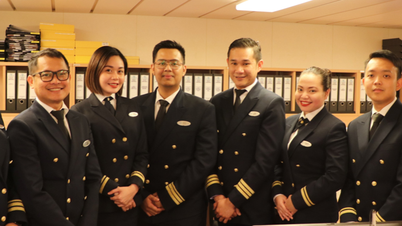

工作机会
-

船上机会
云顶香港（Genting Hong Kong）拥有26年的亚洲邮轮业经验，创建了自己的新邮轮公司– Dream Cruises。Dream Cruises拥有完整质量的德国船队，专为亚洲客源旅客而设计，旨在成为全球邮轮业的领航者，满足“新兴一代”自信，思维独立且向上移动的亚洲旅客的需求。Dream Cruises提供了鼓舞人心的旅程，这些旅程的核心是亚洲，国际精神。该船队的第一艘船云顶梦号专为亚洲市场而设计，于2016年11月首航，其姊妹船世界梦号于2017年11月加入，为来自广州，香港和新加坡的游客提供最高水平的服务，以乘员与乘客的比例来衡量，而最宽敞的舒适度以每下铺的总吨数衡量。为了进一步扩大Dream Cruises家族，Explorer Dream于2019年夏季在上海，大连和天津开业，而冬季则在澳大利亚和新西兰开业。德国已开始建造总容量为204,000吨的全球级船舶，并将于2021年初加入该船队。加入梦想 邮轮，使您的梦想成真！ -
岸上机会
云顶香港（Genting Hong Kong）拥有26年的亚洲邮轮业经验，创建了自己的新邮轮公司– Dream Cruises。Dream Cruises拥有完整质量的德国船队，专为亚洲客源旅客而设计，旨在成为全球邮轮业的领航者，满足“新兴一代”自信，思维独立且向上移动的亚洲旅客的需求。Dream Cruises提供了鼓舞人心的旅程，这些旅程的核心是亚洲，国际精神。该船队的第一艘船云顶梦号专为亚洲市场而设计，于2016年11月首航，其姊妹船世界梦号于2017年11月加入，为来自广州，香港和新加坡的游客提供最高水平的服务，以乘员与乘客的比例来衡量，而最宽敞的舒适度以每下铺的总吨数衡量。为了进一步扩大Dream Cruises家族，Explorer Dream于2019年夏季在上海，大连和天津开业，而冬季则在澳大利亚和新西兰开业。德国已开始建造总容量为204,000吨的全球级船舶，并将于2021年初加入该船队。加入梦想 邮轮，使您的梦想成真！